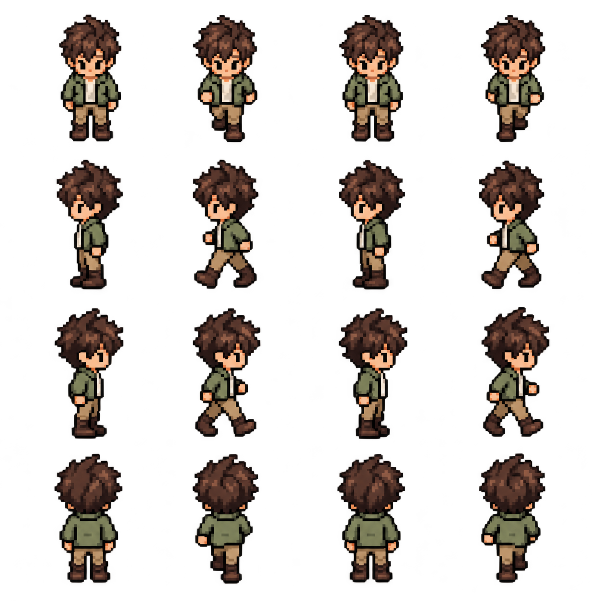

V · A room worth walking through Chapter 23 / 23
A character that walks
A sprite sheet adds poses, not a new rendering system. Keep direction and time in the game, and select an image region through the renderer API.
Choose a pose from the movement result#
The character moves and collides correctly, but its picture never changes. A sprite sheet contains several poses in one image. We will select a smaller rectangle from that image for each pose.
The game will remember facing direction and elapsed animation time. Requested direction chooses where the player faces; actual movement after collision determines whether it walks or stands still. Drawing will read that state without advancing the clock.
Animation is a choice of picture#
The previous character moved as a still image. We will give that movement a short four-pose cycle and remember which way the player faces. Animation does not require skeletal rigs, a scene graph, another pipeline, or uploading image pixels every frame. We place sixteen poses in one persistent texture and change the UV rectangle of the player’s quad.

Save the book’s player-walk.png in your assets directory. It has four rows of poses and transparent space around the figures. Keep that transparency when saving it: a painted checkerboard is not an alpha channel. The application loads the original PNG, not a preview screenshot.
{kind=link}
The sheet is 1254 × 1254 pixels. Its figures are not perfectly aligned to a uniform grid, so we will use an explicit source rectangle for each pose. A source rectangle identifies the top-left texel and the width and height of the part to display. The tables below provide every rectangle for this image; you do not need to measure or generate the art to continue.
Add the smallest missing renderer capability#
In renderer/renderer.odin, extend Sprite with two optional parameters after tint: uv_min defaults to (0,0), and uv_max defaults to (1,1). Existing room and debug rectangle calls still select the whole image. Replace only the recorded UV calculation, not vertex stride, shaders, bind group layouts, or frame encoding.
In renderer/renderer.odin: Replace the entire Sprite procedure, including its body, with the version below. Keep the rest of the file. Complete file with surrounding code.
Sprite :: proc(
r: ^State,
texture: Texture_ID,
position, size: [2]f32,
tint: [4]f32 = {1, 1, 1, 1},
uv_min: [2]f32 = {0, 0},
uv_max: [2]f32 = {1, 1},
) {
assert(r.recording, "Sprite must be between Begin_Frame and End_Frame")
if r.count == MAX_SPRITES || texture == 0 || int(texture) > r.texture_count {
r.overflow = true
return
}
assert(size.x > 0 && size.y > 0)
assert(uv_min.x >= 0 && uv_min.y >= 0 && uv_max.x <= 1 && uv_max.y <= 1)
assert(uv_max.x > uv_min.x && uv_max.y > uv_min.y)
corners := [4][2]f32{{0, 0}, {1, 0}, {1, 1}, {0, 1}}
for corner, i in corners {
r.vertices[r.count * 4 + i] = {
position + corner * size,
uv_min + corner * (uv_max - uv_min),
tint,
}
}
r.texture_ids[r.count] = texture
r.count += 1
}The four local corners remain (0,0), (1,0), (1,1), (0,1). For each corner, compute uv_min + corner × (uv_max − uv_min). That maps the same unit quad onto a selected image rectangle. A frame’s position/size still controls geometry; its UV bounds independently control which texels color that geometry. Sprite now checks that the region is positive and within normalized [0,1] bounds. This API serves a real caller need; the renderer still does not know about directions or frame timers.
| Data | Odin vertex bytes | WGSL meaning |
|---|---|---|
| World corner | position at offset 0, Float32x2/location 0 | Where this corner lands after projection. |
| Selected frame UV corner | uv at offset 8, Float32x2/location 1 | Where this corner samples the sheet. |
| Tint | tint at offset 16, Float32x4/location 2 | Color/opacity multiplier. |
| Stride | Still 32 bytes | Animation changes values, not the pipeline’s memory contract. |
Describe the actual asset#
Add game/animation.odin. Facing :: enum defines four named directions, numbered from zero in the order written. Animation is a struct holding that direction, elapsed phase in seconds, and a moving boolean. [4][4]Sprite_Frame is an array of four rows, each containing four frame records. Rows are South, West, East, North in that order. Columns form the idle/passing/step sequence supplied by the artist or generator. Column zero is also the directional idle pose. These are content conventions, not WebGPU enum values.
In game/animation.odin: Create game/animation.odin with package game and import "core:math" at the top. Add these types and constants at file scope, then append Animate and Current_Frame from the following snippets. Complete file with surrounding code.
Facing :: enum {
South,
West,
East,
North,
}
Animation :: struct {
facing: Facing,
phase: f32,
moving: bool,
}
FRAME_SECONDS :: f32(0.1)
// Visual world units per source texel; independent of the collision footprint.
PLAYER_TEXEL_SCALE :: f32(0.16)
SHEET_SIZE :: [2]f32{1254, 1254}
Sprite_Frame :: struct {
min, size: [2]f32,
}
// Reviewed rectangles in source texels, including transparent padding.
// The generated sheet is not perfectly registered, so draw each cropped frame
// around its own bottom-center anchor at PLAYER_TEXEL_SCALE world units per texel.
PLAYER_FRAMES := [4][4]Sprite_Frame {
{
{{121, 29}, {134, 268}},
{{401, 29}, {138, 270}},
{{706, 29}, {137, 268}},
{{1002, 29}, {138, 269}},
},
{
{{116, 332}, {142, 274}},
{{401, 331}, {140, 273}},
{{705, 332}, {142, 274}},
{{998, 333}, {139, 272}},
},
{
{{112, 641}, {147, 276}},
{{400, 641}, {145, 272}},
{{705, 641}, {147, 277}},
{{1003, 639}, {145, 274}},
},
{
{{112, 945}, {145, 273}},
{{400, 946}, {142, 274}},
{{702, 946}, {145, 271}},
{{998, 944}, {142, 274}},
},
}Each Sprite_Frame stores a source-texel minimum corner and size. PLAYER_FRAMES is a four-by-four array: the first index chooses a direction row and the second chooses a pose column. The listed rectangles include transparent padding around the figures. If you replace the image later, check these rectangles against its actual dimensions.
A frame’s UV minimum is frame.min / SHEET_SIZE; its maximum is (frame.min + frame.size) / SHEET_SIZE. The maximum describes the far edge, not the final included texel center. Nearest sampling plus transparent gutters avoids neighboring-pose bleed at our scales. The padding keeps the selected picture away from its neighbors. ClampToEdge applies to the whole texture, not each pose rectangle, so the padding would need review if you changed the sampling policy.
The world size of a cropped frame is source size × PLAYER_TEXEL_SCALE (0.16), retaining a constant texel-to-world scale across poses. We place its bottom center near the feet, one unit below the game anchor, instead of stretching every crop to an identical width and height. Stretching independently would make a wide stepping pose become unnaturally narrow and a taller frame shrink. Cropping/anchoring affects rendering only; the 8 × 4 collision footprint remains unchanged.
Choose a scale that belongs in the room#
The first south-facing crop is 134 × 268 texels. At PLAYER_TEXEL_SCALE = 0.16, it occupies 21.44 × 42.88 world units. Most poses are about 43–44 units tall at that scale. This size makes the character readable beside the furniture while the room remains 384 × 256 world units.
These are art-direction comparisons, not real-world measurements: the room is drawn in a stylized perspective. Keep a constant scale across poses and inspect both open-floor movement and furniture contact. The bottom-center anchor keeps the boots planted as the sprite grows. The 8 × 4 feet box measures floor contact, so it should not automatically grow with the head and torso. If you deliberately make a wider-bodied character, review the footprint and narrow passages separately.
The verification screenshots show the enlarged final character at native presentation scales. F1 reveals the unchanged feet and obstacle boxes. The body can overlap the chair’s painted pixels at contact because the scene uses a small ground footprint and painter’s order; this simple room does not implement furniture foreground layers or per-object depth sorting.
The game owns direction and time#
Start with a player pressing right. Requested direction selects East. If collision lets the position change, add elapsed seconds to the animation phase; if the position does not change, reset phase to zero. Phase is the time within the current 0.4-second cycle. For example, 0.23 seconds selects column 2 because int(0.23 / 0.1) is 2.
The expression .East if requested.x > 0 else .West chooses one value based on a condition. math.abs compares direction magnitudes without their signs. math.mod keeps the phase within one cycle by taking the remainder after division by 0.4. These operations implement the rule before we select a picture.
In game/animation.odin: Add the complete Animate procedure at file scope, after the package/import lines and outside every other procedure. Keep the other declarations. Complete file with surrounding code.
Animate :: proc(animation: ^Animation, requested, displacement: [2]f32, dt: f32) {
assert(dt >= 0)
facing := animation.facing
if requested.x != 0 || requested.y != 0 {
if math.abs(requested.x) > math.abs(requested.y) {
facing = .East if requested.x > 0 else .West
} else { facing = .South if requested.y > 0 else .North }
}
if facing != animation.facing { animation.phase = 0 }
animation.facing = facing
animation.moving = displacement.x * displacement.x + displacement.y * displacement.y > 0.000001
if animation.moving {
animation.phase = math.mod(animation.phase + dt, FRAME_SECONDS * 4)
} else { animation.phase = 0 }
}Animate receives requested direction, actual resolved displacement, and elapsed seconds. Requested direction chooses facing, even when a wall prevents motion: pressing north against the north wall should face north. The dominant requested axis wins; equal diagonal components choose the vertical direction deterministically. Changing direction resets phase so a new row begins consistently. Releasing all keys retains the last facing direction.
Actual displacement determines whether the player is walking. We use a small squared-distance threshold to suppress floating-point dust at contact. If neither axis moved meaningfully, moving becomes false and phase resets to zero. Thus holding a key against solid furniture produces an idle pose instead of continuously walking in place. Sliding along an edge still produces a walk because a nonzero resolved displacement exists.
While moving, phase advances in seconds and wraps over four × 0.1 = 0.4 seconds. Current_Frame converts phase to an integer column by division by 0.1. A modulo keeps the clock bounded instead of letting it grow for hours and lose floating-point precision. We do not increment the frame once per render: that would play faster on faster displays. The cycle is time-driven at the chosen fixed movement speed; a future variable-speed character might instead drive phase by distance traveled to reduce foot sliding.
In game/animation.odin: Add the complete Current_Frame procedure at file scope, after the package/import lines and outside every other procedure. Keep the other declarations. Complete file with surrounding code.
Current_Frame :: proc(animation: Animation) -> Sprite_Frame {
column := 0
if animation.moving { column = min(int(animation.phase / FRAME_SECONDS), 3) }
return PLAYER_FRAMES[int(animation.facing)][column]
}Current_Frame is a read-only selection. It does not advance phase. If the same simulation state is drawn twice, it chooses the same image both times. Animation phase is presentation state owned by the game because it depends on game meaning—walking, facing, idle—not on a GPU completion callback.
Update after collision; draw after update#
In game/game.odin: Replace the entire Update procedure, including its body, with the version below. Keep the rest of the file. Complete file with surrounding code.
Update :: proc(g: ^State, input: Input, dt: f32) {
assert(dt >= 0)
if input.toggle_collision { g.show_collision = !g.show_collision }
direction := input.movement
length_squared := direction.x * direction.x + direction.y * direction.y
if length_squared > 1 { direction /= math.sqrt(length_squared) }
delta := direction * g.speed * dt
previous := g.position
Move(&g.position, delta, SOLIDS[:])
Animate(&g.animation, direction, g.position - previous, dt)
}Add Animation to game.State. Save the previous position just before Move and call Animate afterward with the difference. This is why animation sees blocked movement correctly. Using direction × speed × dt as “actual motion” would ignore collision and animate through a wall even though world.position did not change. The original movement solver, dt cap, and keyboard mapping are unchanged.
In game/game.odin: Replace the entire Draw procedure, including its body, with the version below. Keep the rest of the file. Complete file with surrounding code.
Draw :: proc(g: ^State, r: ^renderer.State) {
renderer.Sprite(r, g.room, {0, 0}, WORLD_SIZE)
// Only the displayed position is snapped. Simulation retains subpixel motion.
feet := [2]f32{math.round(g.position.x), math.round(g.position.y)}
frame := Current_Frame(g.animation)
size := frame.size * PLAYER_TEXEL_SCALE
anchor := [2]f32{size.x / 2, size.y - 1}
renderer.Sprite(
r,
g.player,
feet - anchor,
size,
uv_min = frame.min / SHEET_SIZE,
uv_max = (frame.min + frame.size) / SHEET_SIZE,
)
if g.show_collision {
for solid in SOLIDS { outline(r, solid, {1, 0.15, 0.05, 0.85}) }
outline(r, Feet(g.position), {0.1, 1, 0.2, 1})
}
}In game.Init, replace player.png with player-walk.png. We still upload just one player texture once. In Draw, select the current frame, compute its geometry size and anchor, and supply UV bounds through named Sprite arguments. The room and F1 overlay use the default full-image UV rectangle. All player frames share one texture ID, so animation does not add a texture run or a bind-group change.
A final animated frame, from input to pixels#
- SDL key state
- Move / collision
- Animate
- Frame rectangle
- Sprite vertices
- GPU sampling
Startup still follows SDL window → native surface → adapter/device/queue → surface configuration → pipeline/buffers/sampler → game asset upload. During a frame, D supplies an eastward request. Move resolves the displacement. Animate faces east and advances phase only if movement occurred. Current_Frame selects one rectangle from the east row. Sprite writes its UV corners alongside its updated world corners. End_Frame processes callbacks, refreshes configuration if needed, acquires the presentation image, uploads the vertex prefix, encodes room then player then optional overlay, submits, and presents. Temporary surface/encoding references are released; the room and sheet remain resident.
Surface acquisition precedes vertex upload, so a skipped acquisition avoids that transfer. Animation has changed the values consumed by existing stages, not the ownership of the surface or the meaning of a draw command.
On contact with the chair, resolved displacement becomes zero. Animate resets to directional column zero. World geometry stops moving, and subsequent frames sample the idle region of the same texture. On release, facing remains east. On a resize, surface dimensions and viewport change, while animation phase, source-texel rectangles, world position, and colliders do not.
Test time, blocked movement, and image selection#
Keep tests/collision_test.odin and add tests/animation_test.odin with the following complete file. It uses the same test package and imports. The first test advances two animation clocks for one second using different step counts. The second checks that a blocked northward request chooses a north-facing idle pose. The third checks both image bounds and the UV values recorded for a selected region.
package room_test
import game "../game"
import renderer "../renderer"
import "core:math"
import "core:testing"
@(test)
animation_uses_seconds_and_retains_facing_when_idle :: proc(t: ^testing.T) {
a, b: game.Animation
for _ in 0 ..< 60 { game.Animate(&a, {1, 0}, {1, 0}, 1.0 / 60.0) }
for _ in 0 ..< 144 { game.Animate(&b, {1, 0}, {1, 0}, 1.0 / 144.0) }
testing.expect(t, math.abs(a.phase - b.phase) < 0.0001)
testing.expect(t, a.facing == .East && a.moving)
game.Animate(&a, {}, {}, 0.016)
testing.expect(t, a.facing == .East && !a.moving && a.phase == 0)
testing.expect(t, game.Current_Frame(a) == game.PLAYER_FRAMES[2][0])
}
@(test)
blocked_movement_idles_and_direction_rows_match :: proc(t: ^testing.T) {
g := game.State {
position = {192, 51},
speed = 72,
}
game.Update(&g, {movement = {0, -1}}, 0.11)
testing.expect(t, g.animation.facing == .North && !g.animation.moving)
a: game.Animation
game.Animate(&a, {-1, 0}, {-1, 0}, 0.11)
testing.expect(t, game.Current_Frame(a) == game.PLAYER_FRAMES[1][1])
game.Animate(&a, {0, 1}, {0, 1}, 0.11)
testing.expect(t, game.Current_Frame(a) == game.PLAYER_FRAMES[0][1])
}
@(test)
atlas_rectangles_and_uv_recording :: proc(t: ^testing.T) {
for row in game.PLAYER_FRAMES {
for frame in row {
testing.expect(
t,
frame.min.x >= 0 && frame.min.y >= 0 && frame.size.x > 0 && frame.size.y > 0,
)
testing.expect(
t,
frame.min.x + frame.size.x <= game.SHEET_SIZE.x &&
frame.min.y + frame.size.y <= game.SHEET_SIZE.y,
)
}
}
r := renderer.State {
texture_count = 1,
}
renderer.Begin_Frame(&r, {384, 256})
renderer.Sprite(&r, 1, {}, {10, 20}, uv_min = {0.25, 0.5}, uv_max = {0.5, 0.75})
testing.expect(t, r.vertices[0].uv == [2]f32{0.25, 0.5})
testing.expect(t, r.vertices[2].uv == [2]f32{0.5, 0.75})
}
The time test allows a small floating-point difference instead of demanding exact equality after repeated additions. The blocked-motion test calls the real game.Update, so it checks the connection between collision and animation as well as the animation helper. UV checks confirm that the renderer records the requested image region without needing a GPU.
Run the tests from native-pixels-game. The test executable belongs in build so Windows can find the SDL3.dll placed there in chapter 1. Choose the same library setting as your application build:
odin test tests -out:build/room-tests -extra-linker-flags:"-L$BOOK_SDL_PREFIX/lib -Wl,-rpath,$BOOK_SDL_PREFIX/lib"odin test tests -out:build/room-tests -extra-linker-flags:"-L/opt/homebrew/lib"odin test tests -out:build/room-tests.exeExpect eleven passing tests: the eight earlier checks and three new animation checks. Then run the window. Hold each direction, release the keys, and press into a wall. Facing should change with the requested direction; the walk cycle should stop when the player stops. Watch the boots while poses change and use F1 to confirm that the feet box stays the same size.
When this work happens#
| Operation | Frequency | Reason |
|---|---|---|
| Decode/upload walk sheet | Once in game.Init | All sixteen poses are resident in one GPU texture. |
| Choose facing, update animation phase | Once per simulation update, after collision | Uses requested direction and actual movement. |
| Choose source rectangle and record UVs | Once per player draw | No texture upload or new pipeline is required. |
| Texture binding | Same player run as before | Changing frames within one sheet does not change the texture ID. |
If the result is different#
| Symptom | What to inspect | Why it matters |
|---|---|---|
| Walk speed depends on FPS | Check whether phase advances in seconds or draw count | Rendering rate does not define elapsed time. |
| Walks in place against a wall | Compare requested movement with resolved displacement | Animation should observe the collision result. |
| Character shifts wildly between frames | Check source rectangles and bottom-center registration | Uniform grid assumptions are unsafe for an imperfectly aligned asset. |
| Shows several characters at once | Inspect UV bounds and normalize by the full sheet size | A frame rectangle is not a new texture; the shader still samples the whole sheet resource. |
| Returns south whenever keys are released | Check facing update condition | Idle should retain direction rather than overwrite it with a default. |
Experiments#
These short, optional checks help you test the explanation. Predict the result first, then run the program. Restore the chapter’s baseline before continuing; later chapters start from the result taught here, without the optional changes.
- Change FRAME_SECONDS from 0.1 to 0.15. Movement speed should stay 72 units/second while the gait slows.
- Press diagonally, release, and explain the retained facing using the dominant-axis tie rule.
- While F1 is enabled, watch the fixed feet box through a walking cycle. Changing poses must not change collision size.
Apply the changes to your project#
Work in native-pixels-game, the directory created in chapter 1. The table lists every application file that changes in this chapter. Create any missing parent directories before adding a file. Keep files not listed here.
| File | Operation |
|---|---|
renderer/renderer.odin | Replace the changed portions shown below; preserve all other code |
game/game.odin | Replace the changed portions shown below; preserve all other code |
game/animation.odin | Add this file |
Line-by-line changes
This is a comparison, not code to paste as a whole. A line starting with - is removed; a line starting with + is added without that prefix. A space marks unchanged context. Lines starting with ---, +++, or @@ identify files and positions. For a complete replacement, use the file listings below instead.
--- before/renderer/renderer.odin
+++ after/renderer/renderer.odin
@@ -199,6 +199,8 @@
texture: Texture_ID,
position, size: [2]f32,
tint: [4]f32 = {1, 1, 1, 1},
+ uv_min: [2]f32 = {0, 0},
+ uv_max: [2]f32 = {1, 1},
) {
assert(r.recording, "Sprite must be between Begin_Frame and End_Frame")
if r.count == MAX_SPRITES || texture == 0 || int(texture) > r.texture_count {
@@ -206,9 +208,15 @@
return
}
assert(size.x > 0 && size.y > 0)
+ assert(uv_min.x >= 0 && uv_min.y >= 0 && uv_max.x <= 1 && uv_max.y <= 1)
+ assert(uv_max.x > uv_min.x && uv_max.y > uv_min.y)
corners := [4][2]f32{{0, 0}, {1, 0}, {1, 1}, {0, 1}}
for corner, i in corners {
- r.vertices[r.count * 4 + i] = {position + corner * size, corner, tint}
+ r.vertices[r.count * 4 + i] = {
+ position + corner * size,
+ uv_min + corner * (uv_max - uv_min),
+ tint,
+ }
}
r.texture_ids[r.count] = texture
r.count += 1
--- before/game/game.odin
+++ after/game/game.odin
@@ -8,6 +8,7 @@
speed: f32,
room, player: renderer.Texture_ID,
show_collision: bool,
+ animation: Animation,
}
Input :: struct {
movement: [2]f32,
@@ -19,7 +20,7 @@
g.speed = 72
g.room = renderer.Load_PNG(r, #load("../assets/room.png", []u8))
if g.room == 0 { return false }
- g.player = renderer.Load_PNG(r, #load("../assets/player.png", []u8))
+ g.player = renderer.Load_PNG(r, #load("../assets/player-walk.png", []u8))
return g.player != 0
}
@@ -30,14 +31,26 @@
length_squared := direction.x * direction.x + direction.y * direction.y
if length_squared > 1 { direction /= math.sqrt(length_squared) }
delta := direction * g.speed * dt
+ previous := g.position
Move(&g.position, delta, SOLIDS[:])
+ Animate(&g.animation, direction, g.position - previous, dt)
}
Draw :: proc(g: ^State, r: ^renderer.State) {
renderer.Sprite(r, g.room, {0, 0}, WORLD_SIZE)
// Only the displayed position is snapped. Simulation retains subpixel motion.
feet := [2]f32{math.round(g.position.x), math.round(g.position.y)}
- renderer.Sprite(r, g.player, feet - [2]f32{16, 30}, {32, 32})
+ frame := Current_Frame(g.animation)
+ size := frame.size * PLAYER_TEXEL_SCALE
+ anchor := [2]f32{size.x / 2, size.y - 1}
+ renderer.Sprite(
+ r,
+ g.player,
+ feet - anchor,
+ size,
+ uv_min = frame.min / SHEET_SIZE,
+ uv_max = (frame.min + frame.size) / SHEET_SIZE,
+ )
if g.show_collision {
for solid in SOLIDS { outline(r, solid, {1, 0.15, 0.05, 0.85}) }
outline(r, Feet(g.position), {0.1, 1, 0.2, 1})
--- before/game/animation.odin
+++ after/game/animation.odin
@@ -0,0 +1,72 @@
+package game
+import "core:math"
+
+Facing :: enum {
+ South,
+ West,
+ East,
+ North,
+}
+Animation :: struct {
+ facing: Facing,
+ phase: f32,
+ moving: bool,
+}
+FRAME_SECONDS :: f32(0.1)
+// Visual world units per source texel; independent of the collision footprint.
+PLAYER_TEXEL_SCALE :: f32(0.16)
+SHEET_SIZE :: [2]f32{1254, 1254}
+Sprite_Frame :: struct {
+ min, size: [2]f32,
+}
+// Reviewed rectangles in source texels, including transparent padding.
+// The generated sheet is not perfectly registered, so draw each cropped frame
+// around its own bottom-center anchor at PLAYER_TEXEL_SCALE world units per texel.
+PLAYER_FRAMES := [4][4]Sprite_Frame {
+ {
+ {{121, 29}, {134, 268}},
+ {{401, 29}, {138, 270}},
+ {{706, 29}, {137, 268}},
+ {{1002, 29}, {138, 269}},
+ },
+ {
+ {{116, 332}, {142, 274}},
+ {{401, 331}, {140, 273}},
+ {{705, 332}, {142, 274}},
+ {{998, 333}, {139, 272}},
+ },
+ {
+ {{112, 641}, {147, 276}},
+ {{400, 641}, {145, 272}},
+ {{705, 641}, {147, 277}},
+ {{1003, 639}, {145, 274}},
+ },
+ {
+ {{112, 945}, {145, 273}},
+ {{400, 946}, {142, 274}},
+ {{702, 946}, {145, 271}},
+ {{998, 944}, {142, 274}},
+ },
+}
+
+Animate :: proc(animation: ^Animation, requested, displacement: [2]f32, dt: f32) {
+ assert(dt >= 0)
+ facing := animation.facing
+ if requested.x != 0 || requested.y != 0 {
+ if math.abs(requested.x) > math.abs(requested.y) {
+ facing = .East if requested.x > 0 else .West
+ } else { facing = .South if requested.y > 0 else .North }
+ }
+ if facing != animation.facing { animation.phase = 0 }
+ animation.facing = facing
+ animation.moving = displacement.x * displacement.x + displacement.y * displacement.y > 0.000001
+ if animation.moving {
+ animation.phase = math.mod(animation.phase + dt, FRAME_SECONDS * 4)
+ } else { animation.phase = 0 }
+}
+
+Current_Frame :: proc(animation: Animation) -> Sprite_Frame {
+ column := 0
+ if animation.moving { column = min(int(animation.phase / FRAME_SECONDS), 3) }
+ return PLAYER_FRAMES[int(animation.facing)][column]
+}Every complete application file for this stage follows. Open a file listing to read or copy its contents. For a new file, use the displayed path and all its contents. For an existing file, either make the focused edits taught above or replace it with its complete listing. Do not append a second copy of an existing procedure. Imports belong after the package line; procedures belong outside other procedures unless the lesson says otherwise.
The book includes the required image files. Save room.png and player.png, plus player-walk.png in your assets directory beside src. Keep their names exactly as shown. These are the images used by the chapter, not a source-code download. If you saved them earlier, keep those files.
{kind=link}
{kind=link}
renderer/renderer.odin 351 lines
package renderer
import "core:fmt"
import "core:math"
import sdl "vendor:sdl3"
import wgpu "vendor:wgpu"
// API: Init, Shutdown, Load_PNG, Begin_Frame, Sprite, Rect, End_Frame, Resize.
// All calls occur on SDL's main thread. State must not be copied after Init.
Texture_ID :: distinct u32
Frame_Result :: enum {
Presented,
Skipped,
Fatal,
}
MAX_SPRITES :: 256
MAX_TEXTURES :: 8
Vertex :: struct {
position, uv: [2]f32,
tint: [4]f32,
}
View_Uniform :: struct #align (16) {
size, padding: [2]f32,
}
#assert(size_of(Vertex) == 32)
#assert(offset_of(Vertex, uv) == 8)
#assert(offset_of(Vertex, tint) == 16)
#assert(size_of(View_Uniform) == 16)
Texture_Slot :: struct {
texture: wgpu.Texture,
view: wgpu.TextureView,
group: wgpu.BindGroup,
}
State :: struct {
gpu: GPU,
window: ^sdl.Window,
pipeline: wgpu.RenderPipeline,
vertex_buffer, index_buffer, view_buffer: wgpu.Buffer,
view_group: wgpu.BindGroup,
texture_layout: wgpu.BindGroupLayout,
sampler: wgpu.Sampler,
textures: [MAX_TEXTURES]Texture_Slot,
texture_count: int,
white: Texture_ID,
vertices: [MAX_SPRITES * 4]Vertex,
texture_ids: [MAX_SPRITES]Texture_ID,
count: int,
view_size: [2]f32,
recording, overflow: bool,
}
Init :: proc(r: ^State, window: ^sdl.Window) -> bool {
r.window = window
if !gpu_init(&r.gpu, window) { return false }
r.vertex_buffer = wgpu.DeviceCreateBuffer(r.gpu.device, &wgpu.BufferDescriptor {
label = "sprite vertices",
size = size_of(r.vertices),
usage = {.Vertex, .CopyDst},
})
indices: [MAX_SPRITES * 6]u16
quad := [6]u16{0, 1, 2, 0, 2, 3}
for i in 0 ..< MAX_SPRITES {
for value, j in quad { indices[i * 6 + j] = u16(i * 4) + value }
}
r.index_buffer = wgpu.DeviceCreateBuffer(r.gpu.device, &wgpu.BufferDescriptor {
label = "quad indices",
size = size_of(indices),
usage = {.Index, .CopyDst},
})
r.view_buffer = wgpu.DeviceCreateBuffer(r.gpu.device, &wgpu.BufferDescriptor {
label = "world extent",
size = size_of(View_Uniform),
usage = {.Uniform, .CopyDst},
})
if r.vertex_buffer == nil || r.index_buffer == nil || r.view_buffer == nil { return false }
wgpu.QueueWriteBuffer(r.gpu.queue, r.index_buffer, 0, &indices, size_of(indices))
view_entry := wgpu.BindGroupLayoutEntry {
binding = 0,
visibility = {.Vertex},
buffer = {type = .Uniform, minBindingSize = size_of(View_Uniform)},
}
view_layout := wgpu.DeviceCreateBindGroupLayout(r.gpu.device, &wgpu.BindGroupLayoutDescriptor {
entryCount = 1,
entries = &view_entry,
})
if view_layout == nil { return false }
defer wgpu.BindGroupLayoutRelease(view_layout)
uniform_entry := wgpu.BindGroupEntry {
binding = 0,
buffer = r.view_buffer,
size = size_of(View_Uniform),
}
r.view_group = wgpu.DeviceCreateBindGroup(r.gpu.device, &wgpu.BindGroupDescriptor {
layout = view_layout,
entryCount = 1,
entries = &uniform_entry,
})
texture_entries := [2]wgpu.BindGroupLayoutEntry {
{
binding = 0,
visibility = {.Fragment},
texture = {sampleType = .Float, viewDimension = ._2D},
},
{binding = 1, visibility = {.Fragment}, sampler = {type = .Filtering}},
}
r.texture_layout = wgpu.DeviceCreateBindGroupLayout(
r.gpu.device,
&wgpu.BindGroupLayoutDescriptor {
entryCount = len(texture_entries),
entries = raw_data(texture_entries[:]),
},
)
r.sampler = wgpu.DeviceCreateSampler(r.gpu.device, &wgpu.SamplerDescriptor {
label = "nearest, no repeat",
addressModeU = .ClampToEdge,
addressModeV = .ClampToEdge,
addressModeW = .ClampToEdge,
minFilter = .Nearest,
magFilter = .Nearest,
mipmapFilter = .Nearest,
lodMinClamp = 0,
lodMaxClamp = 0,
maxAnisotropy = 1,
})
if r.view_group == nil || r.texture_layout == nil || r.sampler == nil { return false }
layouts := [2]wgpu.BindGroupLayout{view_layout, r.texture_layout}
layout := wgpu.DeviceCreatePipelineLayout(r.gpu.device, &wgpu.PipelineLayoutDescriptor {
bindGroupLayoutCount = len(layouts),
bindGroupLayouts = raw_data(layouts[:]),
})
if layout == nil { return false }
defer wgpu.PipelineLayoutRelease(layout)
source := wgpu.ShaderSourceWGSL {
chain = {sType = .ShaderSourceWGSL},
code = #load("sprites.wgsl", string),
}
shader := wgpu.DeviceCreateShaderModule(
r.gpu.device,
&wgpu.ShaderModuleDescriptor{nextInChain = &source.chain},
)
if shader == nil { return false }
defer wgpu.ShaderModuleRelease(shader)
blend := wgpu.BlendState {
color = {operation = .Add, srcFactor = .SrcAlpha, dstFactor = .OneMinusSrcAlpha},
alpha = {operation = .Add, srcFactor = .One, dstFactor = .OneMinusSrcAlpha},
}
target := wgpu.ColorTargetState {
format = r.gpu.config.format,
blend = &blend,
writeMask = {.Red, .Green, .Blue, .Alpha},
}
fragment := wgpu.FragmentState {
module = shader,
entryPoint = "fs_main",
targetCount = 1,
targets = &target,
}
attributes := [3]wgpu.VertexAttribute {
{format = .Float32x2, offset = 0, shaderLocation = 0},
{format = .Float32x2, offset = 8, shaderLocation = 1},
{format = .Float32x4, offset = 16, shaderLocation = 2},
}
vertex_layout := wgpu.VertexBufferLayout {
arrayStride = size_of(Vertex),
stepMode = .Vertex,
attributeCount = len(attributes),
attributes = raw_data(attributes[:]),
}
r.pipeline = wgpu.DeviceCreateRenderPipeline(r.gpu.device, &wgpu.RenderPipelineDescriptor {
label = "sprite pipeline",
layout = layout,
vertex = {
module = shader,
entryPoint = "vs_main",
bufferCount = 1,
buffers = &vertex_layout,
},
fragment = &fragment,
primitive = {topology = .TriangleList, frontFace = .CCW, cullMode = .None},
multisample = {count = 1, mask = 0xffffffff},
})
if r.pipeline == nil || gpu_failed() { return false }
white := [4]u8{255, 255, 255, 255}
r.white = upload_rgba(r, white[:], 1, 1)
return r.white != 0 && !gpu_failed()
}
Resize :: proc(r: ^State) { r.gpu.dirty = true }
Begin_Frame :: proc(r: ^State, world_size: [2]f32) {
assert(!r.recording && world_size.x > 0 && world_size.y > 0)
r.recording = true
r.count = 0
r.overflow = false
r.view_size = world_size
}
Sprite :: proc(
r: ^State,
texture: Texture_ID,
position, size: [2]f32,
tint: [4]f32 = {1, 1, 1, 1},
uv_min: [2]f32 = {0, 0},
uv_max: [2]f32 = {1, 1},
) {
assert(r.recording, "Sprite must be between Begin_Frame and End_Frame")
if r.count == MAX_SPRITES || texture == 0 || int(texture) > r.texture_count {
r.overflow = true
return
}
assert(size.x > 0 && size.y > 0)
assert(uv_min.x >= 0 && uv_min.y >= 0 && uv_max.x <= 1 && uv_max.y <= 1)
assert(uv_max.x > uv_min.x && uv_max.y > uv_min.y)
corners := [4][2]f32{{0, 0}, {1, 0}, {1, 1}, {0, 1}}
for corner, i in corners {
r.vertices[r.count * 4 + i] = {
position + corner * size,
uv_min + corner * (uv_max - uv_min),
tint,
}
}
r.texture_ids[r.count] = texture
r.count += 1
}
Rect :: proc(r: ^State, position, size: [2]f32, color: [4]f32) {
Sprite(r, r.white, position, size, color)
}
End_Frame :: proc(r: ^State) -> Frame_Result {
assert(r.recording)
r.recording = false
if r.overflow { fmt.eprintln("Sprite capacity exceeded or invalid texture ID"); return .Fatal }
gpu := &r.gpu
wgpu.InstanceProcessEvents(gpu.instance)
if gpu_failed() { return .Fatal }
if !gpu_refresh_surface(gpu, r.window) {
if gpu_failed() { return .Fatal }
return .Skipped
}
frame := wgpu.SurfaceGetCurrentTexture(gpu.platform.surface)
defer if frame.texture != nil { wgpu.TextureRelease(frame.texture) }
#partial switch frame.status {
case .SuccessOptimal:
case .SuccessSuboptimal:
gpu.dirty = true
case .Timeout, .Occluded:
return .Skipped
case .Outdated:
gpu.dirty = true; return .Skipped
case:
fmt.eprintln("Surface acquisition:", frame.status); return .Fatal
}
if frame.texture == nil { return .Fatal }
view := wgpu.TextureCreateView(frame.texture, nil)
if view == nil { return .Fatal }
defer wgpu.TextureViewRelease(view)
uniforms := View_Uniform {
size = r.view_size,
}
wgpu.QueueWriteBuffer(gpu.queue, r.view_buffer, 0, &uniforms, size_of(uniforms))
if r.count > 0 {
wgpu.QueueWriteBuffer(
gpu.queue,
r.vertex_buffer,
0,
&r.vertices[0],
uint(r.count * 4 * size_of(Vertex)),
)
}
encoder := wgpu.DeviceCreateCommandEncoder(
gpu.device,
&wgpu.CommandEncoderDescriptor{label = "room frame"},
)
if encoder == nil { return .Fatal }
defer wgpu.CommandEncoderRelease(encoder)
attachment := wgpu.RenderPassColorAttachment {
view = view,
depthSlice = wgpu.DEPTH_SLICE_UNDEFINED,
loadOp = .Clear,
storeOp = .Store,
clearValue = {0.012, 0.018, 0.025, 1},
}
pass := wgpu.CommandEncoderBeginRenderPass(encoder, &wgpu.RenderPassDescriptor {
colorAttachmentCount = 1,
colorAttachments = &attachment,
})
if pass == nil { return .Fatal }
defer wgpu.RenderPassEncoderRelease(pass)
width, height := f32(gpu.config.width), f32(gpu.config.height)
scale := min(width / r.view_size.x, height / r.view_size.y)
if scale >= 1 { scale = math.floor(scale) }
viewport := r.view_size * scale
// Guard floating-point roundoff at very small fractional fit scales.
viewport.x = min(viewport.x, width)
viewport.y = min(viewport.y, height)
origin := [2]f32{math.floor((width - viewport.x) / 2), math.floor((height - viewport.y) / 2)}
wgpu.RenderPassEncoderSetViewport(pass, origin.x, origin.y, viewport.x, viewport.y, 0, 1)
wgpu.RenderPassEncoderSetScissorRect(
pass,
u32(origin.x),
u32(origin.y),
u32(math.ceil(viewport.x)),
u32(math.ceil(viewport.y)),
)
wgpu.RenderPassEncoderSetPipeline(pass, r.pipeline)
wgpu.RenderPassEncoderSetBindGroup(pass, 0, r.view_group)
wgpu.RenderPassEncoderSetVertexBuffer(pass, 0, r.vertex_buffer, 0, size_of(r.vertices))
wgpu.RenderPassEncoderSetIndexBuffer(
pass,
r.index_buffer,
.Uint16,
0,
MAX_SPRITES * 6 * size_of(u16),
)
// Adjacent equal textures form a run. Never sort transparent sprites by texture.
first := 0
for first < r.count {
end := first + 1
for end < r.count && r.texture_ids[end] == r.texture_ids[first] { end += 1 }
slot := &r.textures[int(r.texture_ids[first]) - 1]
wgpu.RenderPassEncoderSetBindGroup(pass, 1, slot.group)
wgpu.RenderPassEncoderDrawIndexed(pass, u32((end - first) * 6), 1, u32(first * 6), 0, 0)
first = end
}
wgpu.RenderPassEncoderEnd(pass)
commands := wgpu.CommandEncoderFinish(encoder, &wgpu.CommandBufferDescriptor{})
if commands == nil { return .Fatal }
defer wgpu.CommandBufferRelease(commands)
if gpu_failed() { return .Fatal }
wgpu.QueueSubmit(gpu.queue, []wgpu.CommandBuffer{commands})
if wgpu.SurfacePresent(gpu.platform.surface) != .Success || gpu_failed() { return .Fatal }
return .Presented
}
Shutdown :: proc(r: ^State) {
if r.gpu.device != nil { _ = wgpu.DevicePoll(r.gpu.device, true, nil) }
for &slot in r.textures {
if slot.group != nil { wgpu.BindGroupRelease(slot.group) }
if slot.view != nil { wgpu.TextureViewRelease(slot.view) }
if slot.texture != nil { wgpu.TextureRelease(slot.texture) }
}
if r.sampler != nil { wgpu.SamplerRelease(r.sampler) }
if r.texture_layout != nil { wgpu.BindGroupLayoutRelease(r.texture_layout) }
if r.view_group != nil { wgpu.BindGroupRelease(r.view_group) }
if r.view_buffer != nil { wgpu.BufferRelease(r.view_buffer) }
if r.index_buffer != nil { wgpu.BufferRelease(r.index_buffer) }
if r.vertex_buffer != nil { wgpu.BufferRelease(r.vertex_buffer) }
if r.pipeline != nil { wgpu.RenderPipelineRelease(r.pipeline) }
gpu_destroy(&r.gpu)
r^ = {}
}
renderer/texture.odin 79 lines
package renderer
import "core:c"
import "core:fmt"
import stbi "vendor:stb/image"
import wgpu "vendor:wgpu"
// Trusted, embedded PNG assets only. The decoder does not create GPU resources.
Load_PNG :: proc(r: ^State, encoded: []u8) -> Texture_ID {
assert(!r.recording, "Load textures during initialization")
if len(encoded) == 0 || len(encoded) > 0x7fffffff { return 0 }
width, height, channels: c.int
if stbi.info_from_memory(raw_data(encoded), c.int(len(encoded)), &width, &height, &channels) ==
0 {
fmt.eprintln("Invalid image header"); return 0
}
if width <= 0 ||
height <= 0 ||
u32(width) > r.gpu.max_texture_dimension ||
u32(height) >
r.gpu.max_texture_dimension { fmt.eprintln("Image dimensions exceed device limits"); return 0 }
pixels := stbi.load_from_memory(
raw_data(encoded),
c.int(len(encoded)),
&width,
&height,
&channels,
4,
)
if pixels == nil { fmt.eprintln("PNG decoding failed"); return 0 }
defer stbi.image_free(pixels)
return upload_rgba(r, pixels[:int(width) * int(height) * 4], u32(width), u32(height))
}
@(private)
upload_rgba :: proc(r: ^State, pixels: []u8, width, height: u32) -> Texture_ID {
if r.texture_count == MAX_TEXTURES { fmt.eprintln("Texture capacity exceeded"); return 0 }
slot := &r.textures[r.texture_count]
slot.texture = wgpu.DeviceCreateTexture(r.gpu.device, &wgpu.TextureDescriptor {
label = "sprite RGBA",
size = {width, height, 1},
dimension = ._2D,
format = .RGBA8UnormSrgb,
mipLevelCount = 1,
sampleCount = 1,
usage = {.TextureBinding, .CopyDst},
})
if slot.texture == nil { return 0 }
destination := wgpu.TexelCopyTextureInfo {
texture = slot.texture,
aspect = .All,
}
layout := wgpu.TexelCopyBufferLayout {
bytesPerRow = width * 4,
rowsPerImage = height,
}
extent := wgpu.Extent3D{width, height, 1}
wgpu.QueueWriteTexture(
r.gpu.queue,
&destination,
raw_data(pixels),
uint(len(pixels)),
&layout,
&extent,
)
slot.view = wgpu.TextureCreateView(slot.texture, nil)
if slot.view == nil { return 0 }
entries := [2]wgpu.BindGroupEntry {
{binding = 0, textureView = slot.view},
{binding = 1, sampler = r.sampler},
}
slot.group = wgpu.DeviceCreateBindGroup(r.gpu.device, &wgpu.BindGroupDescriptor {
layout = r.texture_layout,
entryCount = len(entries),
entries = raw_data(entries[:]),
})
if slot.group == nil || gpu_failed() { return 0 }
r.texture_count += 1
return Texture_ID(r.texture_count)
}
renderer/sprites.wgsl 22 lines
struct View { size: vec2f, padding: vec2f }
@group(0) @binding(0) var<uniform> view: View;
@group(1) @binding(0) var sprite: texture_2d<f32>;
@group(1) @binding(1) var sprite_sampler: sampler;
struct Vertex_Output {
@builtin(position) position: vec4f,
@location(0) uv: vec2f,
@location(1) tint: vec4f,
}
@vertex fn vs_main(@location(0) position: vec2f,
@location(1) uv: vec2f,
@location(2) tint: vec4f) -> Vertex_Output {
var out: Vertex_Output;
out.position = vec4f(position.x / view.size.x * 2.0 - 1.0,
1.0 - position.y / view.size.y * 2.0, 0.0, 1.0);
out.uv = uv;
out.tint = tint;
return out;
}
@fragment fn fs_main(in: Vertex_Output) -> @location(0) vec4f {
return textureSample(sprite, sprite_sampler, in.uv) * in.tint;
}
game/game.odin 66 lines
package game
import renderer "../renderer"
import "core:math"
WORLD_SIZE :: [2]f32{384, 256}
State :: struct {
position: [2]f32,
speed: f32,
room, player: renderer.Texture_ID,
show_collision: bool,
animation: Animation,
}
Input :: struct {
movement: [2]f32,
toggle_collision: bool,
}
Init :: proc(g: ^State, r: ^renderer.State) -> bool {
g.position = {192, 205}
g.speed = 72
g.room = renderer.Load_PNG(r, #load("../assets/room.png", []u8))
if g.room == 0 { return false }
g.player = renderer.Load_PNG(r, #load("../assets/player-walk.png", []u8))
return g.player != 0
}
Update :: proc(g: ^State, input: Input, dt: f32) {
assert(dt >= 0)
if input.toggle_collision { g.show_collision = !g.show_collision }
direction := input.movement
length_squared := direction.x * direction.x + direction.y * direction.y
if length_squared > 1 { direction /= math.sqrt(length_squared) }
delta := direction * g.speed * dt
previous := g.position
Move(&g.position, delta, SOLIDS[:])
Animate(&g.animation, direction, g.position - previous, dt)
}
Draw :: proc(g: ^State, r: ^renderer.State) {
renderer.Sprite(r, g.room, {0, 0}, WORLD_SIZE)
// Only the displayed position is snapped. Simulation retains subpixel motion.
feet := [2]f32{math.round(g.position.x), math.round(g.position.y)}
frame := Current_Frame(g.animation)
size := frame.size * PLAYER_TEXEL_SCALE
anchor := [2]f32{size.x / 2, size.y - 1}
renderer.Sprite(
r,
g.player,
feet - anchor,
size,
uv_min = frame.min / SHEET_SIZE,
uv_max = (frame.min + frame.size) / SHEET_SIZE,
)
if g.show_collision {
for solid in SOLIDS { outline(r, solid, {1, 0.15, 0.05, 0.85}) }
outline(r, Feet(g.position), {0.1, 1, 0.2, 1})
}
}
@(private)
outline :: proc(r: ^renderer.State, box: Box, color: [4]f32) {
renderer.Rect(r, box.min, {box.size.x, 1}, color)
renderer.Rect(r, box.min + [2]f32{0, box.size.y - 1}, {box.size.x, 1}, color)
renderer.Rect(r, box.min, {1, box.size.y}, color)
renderer.Rect(r, box.min + [2]f32{box.size.x - 1, 0}, {1, box.size.y}, color)
}
game/collision.odin 50 lines
package game
Box :: struct {
min, size: [2]f32,
}
// Hand-authored against room.png at 1536x1024, displayed at 384x256.
// This table is gameplay data, not inferred from the artwork or its alpha.
SOLIDS := [?]Box {
{{0, 0}, {384, 48}}, // north wall
{{0, 240}, {384, 16}}, // south wall; doorway is decorative
{{0, 48}, {24, 192}}, // west wall
{{362, 48}, {22, 192}}, // east wall
{{26, 24}, {65, 118}}, // bed
{{90, 41}, {27, 34}}, // bedside table
{{300, 16}, {60, 65}}, // bookshelf
{{274, 90}, {84, 60}}, // work table
{{295, 134}, {31, 38}}, // chair
{{26, 160}, {54, 40}}, // chest
{{17, 196}, {33, 39}}, // plant
}
Feet :: proc(position: [2]f32) -> Box { return {position - [2]f32{4, 3}, {8, 4}} }
Overlaps :: proc(a, b: Box) -> bool {
return(
a.min.x < b.min.x + b.size.x &&
a.min.x + a.size.x > b.min.x &&
a.min.y < b.min.y + b.size.y &&
a.min.y + a.size.y > b.min.y \
)
}
// Axis-separated swept AABB: clip displacement at the first crossed solid edge.
// Starting feet must be outside all solids. Obstacles are static, axis-aligned.
Move :: proc(position: ^[2]f32, delta: [2]f32, solids: []Box) {
for axis in 0 ..< 2 {
other := 1 - axis
feet := Feet(position^)
allowed := delta[axis]
for solid in solids {
if feet.min[other] >= solid.min[other] + solid.size[other] ||
feet.min[other] + feet.size[other] <= solid.min[other] { continue }
near := feet.min[axis]
far := near + feet.size[axis]
solid_near := solid.min[axis]
solid_far := solid_near + solid.size[axis]
if allowed > 0 && far <= solid_near { allowed = min(allowed, solid_near - far) }
if allowed < 0 && near >= solid_far { allowed = max(allowed, solid_far - near) }
}
position[axis] += allowed
}
}
src/main.odin 64 lines
package room
import game "../game"
import renderer "../renderer"
import "core:fmt"
import sdl "vendor:sdl3"
main :: proc() {
if !sdl.Init({.VIDEO}) { fmt.eprintln("SDL initialization:", sdl.GetError()); return }
defer sdl.Quit()
flags: sdl.WindowFlags = {.RESIZABLE, .HIGH_PIXEL_DENSITY}
when ODIN_OS == .Darwin { flags += {.METAL} }
window := sdl.CreateWindow(
"Native Pixels — WASD / arrows · F1 collisions",
1152,
768,
flags,
)
if window == nil { fmt.eprintln("Window creation:", sdl.GetError()); return }
defer sdl.DestroyWindow(window)
if !sdl.ShowWindow(window) { fmt.eprintln("Show window:", sdl.GetError()); return }
if !sdl.RaiseWindow(window) { fmt.eprintln("Window focus request:", sdl.GetError()) }
rendering: renderer.State
defer renderer.Shutdown(&rendering)
if !renderer.Init(
&rendering,
window,
) { fmt.eprintln("Renderer initialization failed"); return }
world: game.State
if !game.Init(&world, &rendering) { fmt.eprintln("Game assets failed to load"); return }
previous_ticks := sdl.GetTicksNS()
running := true
for running {
input: game.Input
event: sdl.Event
for sdl.PollEvent(&event) {
#partial switch event.type {
case .QUIT, .WINDOW_CLOSE_REQUESTED:
running = false
case .WINDOW_PIXEL_SIZE_CHANGED, .WINDOW_RESTORED:
renderer.Resize(&rendering)
case .KEY_DOWN:
if event.key.scancode == .F1 && !event.key.repeat { input.toggle_collision = true }
}
}
if !running { break }
now := sdl.GetTicksNS()
dt := min(f64(now - previous_ticks) / 1_000_000_000.0, 0.05)
previous_ticks = now
if .MINIMIZED in sdl.GetWindowFlags(window) { sdl.Delay(10); continue }
if .INPUT_FOCUS in sdl.GetWindowFlags(window) {
keys := sdl.GetKeyboardState(nil)
if keys[sdl.Scancode.D] || keys[sdl.Scancode.RIGHT] { input.movement.x += 1 }
if keys[sdl.Scancode.A] || keys[sdl.Scancode.LEFT] { input.movement.x -= 1 }
if keys[sdl.Scancode.S] || keys[sdl.Scancode.DOWN] { input.movement.y += 1 }
if keys[sdl.Scancode.W] || keys[sdl.Scancode.UP] { input.movement.y -= 1 }
}
game.Update(&world, input, f32(dt))
renderer.Begin_Frame(&rendering, game.WORLD_SIZE)
game.Draw(&world, &rendering)
result := renderer.End_Frame(&rendering)
if result == .Fatal { fmt.eprintln("Rendering stopped after a GPU or API error"); break }
if result == .Skipped { sdl.Delay(10) }
}
}
renderer/gpu.odin 200 lines
package renderer
import "base:intrinsics"
import "base:runtime"
import "core:c"
import "core:fmt"
import sdl "vendor:sdl3"
import wgpu "vendor:wgpu"
GPU :: struct {
instance: wgpu.Instance,
platform: Platform_Surface,
adapter: wgpu.Adapter,
device: wgpu.Device,
queue: wgpu.Queue,
adapter_done, device_done: bool,
config: wgpu.SurfaceConfiguration,
configured, dirty: bool,
max_texture_dimension: u32,
}
gpu_init :: proc(gpu: ^GPU, window: ^sdl.Window) -> bool {
gpu.instance = wgpu.CreateInstance(nil)
if gpu.instance == nil {
fmt.eprintln("Cannot create a WebGPU instance")
return false
}
gpu.platform = platform_surface_create(gpu.instance, window)
if gpu.platform.surface == nil {
fmt.eprintln("Cannot connect WebGPU to the SDL window")
return false
}
if !gpu_request_device(gpu) { return false }
if !gpu_choose_surface(gpu) { return false }
gpu.dirty = true
_ = gpu_refresh_surface(gpu, window)
return !gpu_failed()
}
gpu_destroy :: proc(gpu: ^GPU) {
if gpu.device != nil { _ = wgpu.DevicePoll(gpu.device, true, nil) }
if gpu.configured { wgpu.SurfaceUnconfigure(gpu.platform.surface) }
if gpu.queue != nil { wgpu.QueueRelease(gpu.queue) }
if gpu.device != nil { wgpu.DeviceRelease(gpu.device) }
if gpu.adapter != nil { wgpu.AdapterRelease(gpu.adapter) }
platform_surface_destroy(&gpu.platform)
if gpu.instance != nil { wgpu.InstanceRelease(gpu.instance) }
gpu^ = {}
}
// Process-lifetime storage: native diagnostic callbacks may arrive on other threads.
gpu_fault: bool
gpu_failed :: proc() -> bool { return intrinsics.atomic_load(&gpu_fault) }
adapter_ready :: proc "c" (
status: wgpu.RequestAdapterStatus,
adapter: wgpu.Adapter,
message: wgpu.StringView,
userdata1, userdata2: rawptr,
) {
context = runtime.default_context()
gpu := cast(^GPU)userdata1
gpu.adapter_done = true
if status ==
.Success { gpu.adapter = adapter } else { fmt.eprintln("Adapter request:", status, message) }
}
device_ready :: proc "c" (
status: wgpu.RequestDeviceStatus,
device: wgpu.Device,
message: wgpu.StringView,
userdata1, userdata2: rawptr,
) {
context = runtime.default_context()
gpu := cast(^GPU)userdata1
gpu.device_done = true
if status ==
.Success { gpu.device = device } else { fmt.eprintln("Device request:", status, message) }
}
device_lost :: proc "c" (
device: ^wgpu.Device,
reason: wgpu.DeviceLostReason,
message: wgpu.StringView,
userdata1, userdata2: rawptr,
) {
context = runtime.default_context()
if reason == .Destroyed { return }
fmt.eprintln("Device lost:", reason, message)
intrinsics.atomic_store(&gpu_fault, true)
}
uncaptured_error :: proc "c" (
device: ^wgpu.Device,
error_type: wgpu.ErrorType,
message: wgpu.StringView,
userdata1, userdata2: rawptr,
) {
context = runtime.default_context()
fmt.eprintln("WebGPU error:", error_type, message)
intrinsics.atomic_store(&gpu_fault, true)
}
gpu_request_device :: proc(gpu: ^GPU) -> bool {
options := wgpu.RequestAdapterOptions {
compatibleSurface = gpu.platform.surface,
powerPreference = .HighPerformance,
featureLevel = .Core,
}
_ = wgpu.InstanceRequestAdapter(gpu.instance, &options, {
mode = .AllowSpontaneos,
callback = adapter_ready,
userdata1 = gpu,
})
// Verified wgpu-native 29.0.1.1 behavior: these two request callbacks run inline.
// Do not carry this assumption to Dawn or to a later native implementation.
assert(gpu.adapter_done, "Pinned wgpu-native request contract changed")
if gpu.adapter == nil { return false }
descriptor := wgpu.DeviceDescriptor {
label = "2D device",
defaultQueue = {label = "2D queue"},
deviceLostCallbackInfo = {mode = .AllowSpontaneos, callback = device_lost},
uncapturedErrorCallbackInfo = {callback = uncaptured_error},
}
_ = wgpu.AdapterRequestDevice(gpu.adapter, &descriptor, {
mode = .AllowSpontaneos,
callback = device_ready,
userdata1 = gpu,
})
assert(gpu.device_done, "Pinned wgpu-native request contract changed")
if gpu.device == nil { return false }
gpu.queue = wgpu.DeviceGetQueue(gpu.device)
return gpu.queue != nil && !gpu_failed()
}
gpu_choose_surface :: proc(gpu: ^GPU) -> bool {
caps, status := wgpu.SurfaceGetCapabilities(gpu.platform.surface, gpu.adapter)
if status != .Success {
fmt.eprintln("Surface capabilities unavailable:", status)
return false
}
defer wgpu.SurfaceCapabilitiesFreeMembers(caps)
format: wgpu.TextureFormat = .Undefined
for candidate in caps.formats[:caps.formatCount] {
if candidate == .BGRA8UnormSrgb || candidate == .RGBA8UnormSrgb {
format = candidate
break
}
}
if format == .Undefined || !(.RenderAttachment in caps.usages) {
fmt.eprintln("This example needs an sRGB RGBA/BGRA renderable surface")
return false
}
fifo := false
for mode in caps.presentModes[:caps.presentModeCount] {
if mode == .Fifo { fifo = true }
}
if !fifo { fmt.eprintln("Surface does not offer FIFO presentation"); return false }
alpha: wgpu.CompositeAlphaMode = .Auto
for mode in caps.alphaModes[:caps.alphaModeCount] {
if mode == .Opaque { alpha = .Opaque }
}
limits, limit_status := wgpu.DeviceGetLimits(gpu.device)
if limit_status != .Success { return false }
gpu.max_texture_dimension = limits.maxTextureDimension2D
gpu.config = {
device = gpu.device,
format = format,
usage = {.RenderAttachment},
presentMode = .Fifo,
alphaMode = alpha,
}
fmt.println("Surface format:", format)
return true
}
gpu_refresh_surface :: proc(gpu: ^GPU, window: ^sdl.Window) -> bool {
if .MINIMIZED in sdl.GetWindowFlags(window) { return false }
width, height: c.int
if !sdl.GetWindowSizeInPixels(window, &width, &height) {
fmt.eprintln("Drawable size:", sdl.GetError())
intrinsics.atomic_store(&gpu_fault, true)
return false
}
if width <= 0 || height <= 0 { return false }
if u32(width) > gpu.max_texture_dimension || u32(height) > gpu.max_texture_dimension {
return false
}
if gpu.dirty ||
!gpu.configured ||
gpu.config.width != u32(width) ||
gpu.config.height != u32(height) {
gpu.config.width = u32(width)
gpu.config.height = u32(height)
wgpu.SurfaceConfigure(gpu.platform.surface, &gpu.config)
gpu.configured = !gpu_failed()
gpu.dirty = false
}
return gpu.configured
}
renderer/platform.odin 104 lines
package renderer
import "core:fmt"
import sdl "vendor:sdl3"
import wgpu "vendor:wgpu"
// SDL owns the window. We own this extra Metal view, when one exists.
Platform_Surface :: struct {
surface: wgpu.Surface,
metal_view: sdl.MetalView, // nil on Windows and Linux
}
platform_surface_create :: proc(instance: wgpu.Instance, window: ^sdl.Window) -> Platform_Surface {
result: Platform_Surface
when ODIN_OS == .Darwin {
result.metal_view = sdl.Metal_CreateView(window)
if result.metal_view == nil {
fmt.eprintln("Metal view:", sdl.GetError())
return result
}
layer := sdl.Metal_GetLayer(result.metal_view)
if layer == nil { return result }
source := wgpu.SurfaceSourceMetalLayer {
chain = {sType = .SurfaceSourceMetalLayer},
layer = layer,
}
descriptor := wgpu.SurfaceDescriptor {
nextInChain = &source.chain,
label = "SDL Metal surface",
}
result.surface = wgpu.InstanceCreateSurface(instance, &descriptor)
} else when ODIN_OS == .Windows {
properties := sdl.GetWindowProperties(window)
hwnd := sdl.GetPointerProperty(properties, sdl.PROP_WINDOW_WIN32_HWND_POINTER, nil)
instance_handle := sdl.GetPointerProperty(
properties,
sdl.PROP_WINDOW_WIN32_INSTANCE_POINTER,
nil,
)
if hwnd == nil || instance_handle == nil { return result }
source := wgpu.SurfaceSourceWindowsHWND {
chain = {sType = .SurfaceSourceWindowsHWND},
hwnd = hwnd,
hinstance = instance_handle,
}
descriptor := wgpu.SurfaceDescriptor {
nextInChain = &source.chain,
label = "SDL Win32 surface",
}
result.surface = wgpu.InstanceCreateSurface(instance, &descriptor)
} else when ODIN_OS == .Linux {
properties := sdl.GetWindowProperties(window)
switch sdl.GetCurrentVideoDriver() {
case "wayland":
display := sdl.GetPointerProperty(
properties,
sdl.PROP_WINDOW_WAYLAND_DISPLAY_POINTER,
nil,
)
surface := sdl.GetPointerProperty(
properties,
sdl.PROP_WINDOW_WAYLAND_SURFACE_POINTER,
nil,
)
if display == nil || surface == nil { return result }
source := wgpu.SurfaceSourceWaylandSurface {
chain = {sType = .SurfaceSourceWaylandSurface},
display = display,
surface = surface,
}
descriptor := wgpu.SurfaceDescriptor {
nextInChain = &source.chain,
label = "SDL Wayland surface",
}
result.surface = wgpu.InstanceCreateSurface(instance, &descriptor)
case "x11":
display := sdl.GetPointerProperty(properties, sdl.PROP_WINDOW_X11_DISPLAY_POINTER, nil)
window_id := sdl.GetNumberProperty(properties, sdl.PROP_WINDOW_X11_WINDOW_NUMBER, 0)
if display == nil || window_id == 0 { return result }
source := wgpu.SurfaceSourceXlibWindow {
chain = {sType = .SurfaceSourceXlibWindow},
display = display,
window = u64(window_id),
}
descriptor := wgpu.SurfaceDescriptor {
nextInChain = &source.chain,
label = "SDL X11 surface",
}
result.surface = wgpu.InstanceCreateSurface(instance, &descriptor)
case:
fmt.eprintln("Unsupported SDL video driver:", sdl.GetCurrentVideoDriver())
}
} else {
#panic("This book targets macOS, Windows, and Linux desktop windows")
}
return result
}
platform_surface_destroy :: proc(platform: ^Platform_Surface) {
if platform.surface != nil { wgpu.SurfaceRelease(platform.surface) }
when ODIN_OS == .Darwin {
if platform.metal_view != nil { sdl.Metal_DestroyView(platform.metal_view) }
}
platform^ = {}
}
game/animation.odin 72 lines
package game
import "core:math"
Facing :: enum {
South,
West,
East,
North,
}
Animation :: struct {
facing: Facing,
phase: f32,
moving: bool,
}
FRAME_SECONDS :: f32(0.1)
// Visual world units per source texel; independent of the collision footprint.
PLAYER_TEXEL_SCALE :: f32(0.16)
SHEET_SIZE :: [2]f32{1254, 1254}
Sprite_Frame :: struct {
min, size: [2]f32,
}
// Reviewed rectangles in source texels, including transparent padding.
// The generated sheet is not perfectly registered, so draw each cropped frame
// around its own bottom-center anchor at PLAYER_TEXEL_SCALE world units per texel.
PLAYER_FRAMES := [4][4]Sprite_Frame {
{
{{121, 29}, {134, 268}},
{{401, 29}, {138, 270}},
{{706, 29}, {137, 268}},
{{1002, 29}, {138, 269}},
},
{
{{116, 332}, {142, 274}},
{{401, 331}, {140, 273}},
{{705, 332}, {142, 274}},
{{998, 333}, {139, 272}},
},
{
{{112, 641}, {147, 276}},
{{400, 641}, {145, 272}},
{{705, 641}, {147, 277}},
{{1003, 639}, {145, 274}},
},
{
{{112, 945}, {145, 273}},
{{400, 946}, {142, 274}},
{{702, 946}, {145, 271}},
{{998, 944}, {142, 274}},
},
}
Animate :: proc(animation: ^Animation, requested, displacement: [2]f32, dt: f32) {
assert(dt >= 0)
facing := animation.facing
if requested.x != 0 || requested.y != 0 {
if math.abs(requested.x) > math.abs(requested.y) {
facing = .East if requested.x > 0 else .West
} else { facing = .South if requested.y > 0 else .North }
}
if facing != animation.facing { animation.phase = 0 }
animation.facing = facing
animation.moving = displacement.x * displacement.x + displacement.y * displacement.y > 0.000001
if animation.moving {
animation.phase = math.mod(animation.phase + dt, FRAME_SECONDS * 4)
} else { animation.phase = 0 }
}
Current_Frame :: proc(animation: Animation) -> Sprite_Frame {
column := 0
if animation.moving { column = min(int(animation.phase / FRAME_SECONDS), 3) }
return PLAYER_FRAMES[int(animation.facing)][column]
}
tests/collision_test.odin · test file
package room_test
import game "../game"
import renderer "../renderer"
import "core:math"
import "core:testing"
@(test)
spawn_is_clear :: proc(t: ^testing.T) {
for box in game.SOLIDS { testing.expect(t, !game.Overlaps(game.Feet({192, 205}), box)) }
}
@(test)
sweep_blocks_large_steps_in_both_directions :: proc(t: ^testing.T) {
solids := [1]game.Box{{{100, 0}, {20, 100}}}
a := [2]f32{40, 50}
game.Move(&a, {1000, 0}, solids[:])
testing.expect(t, a.x == 96)
b := [2]f32{200, 50}
game.Move(&b, {-1000, 0}, solids[:])
testing.expect(t, b.x == 124)
}
@(test)
contact_slides_and_can_move_away :: proc(t: ^testing.T) {
solids := [1]game.Box{{{100, 0}, {20, 100}}}
p := [2]f32{96, 50}
game.Move(&p, {20, 20}, solids[:])
testing.expect(t, p.x == 96 && p.y == 70)
game.Move(&p, {-10, 0}, solids[:])
testing.expect(t, p.x == 86)
}
@(test)
room_walls_and_chair :: proc(t: ^testing.T) {
p := [2]f32{192, 205}
game.Move(&p, {1000, 0}, game.SOLIDS[:])
testing.expect(t, p.x == 358)
game.Move(&p, {0, 1000}, game.SOLIDS[:])
testing.expect(t, p.y == 239)
p = {312, 205}
game.Move(&p, {0, -1000}, game.SOLIDS[:])
testing.expect(t, p.y == 175)
p = {192, 205}
game.Move(&p, {0, -1000}, game.SOLIDS[:])
testing.expect(t, p.y == 51)
}
@(test)
elapsed_time_and_diagonal_speed :: proc(t: ^testing.T) {
a := game.State {
position = {150, 200},
speed = 20,
}
b := a
for _ in 0 ..< 60 { game.Update(&a, {movement = {1, 0}}, 1.0 / 60.0) }
for _ in 0 ..< 144 { game.Update(&b, {movement = {1, 0}}, 1.0 / 144.0) }
testing.expect(t, math.abs(a.position.x - b.position.x) < 0.01)
c := game.State {
position = {150, 200},
speed = 20,
}
game.Update(&c, {movement = {1, 1}}, 1)
delta := c.position - [2]f32{150, 200}
testing.expect(t, math.abs(math.sqrt(delta.x * delta.x + delta.y * delta.y) - 20) < 0.001)
}
@(test)
touching_edges_are_not_overlap :: proc(t: ^testing.T) {
testing.expect(t, !game.Overlaps({{0, 0}, {10, 10}}, {{10, 0}, {10, 10}}))
testing.expect(t, game.Overlaps({{0, 0}, {10, 10}}, {{9, 0}, {10, 10}}))
}
@(test)
renderer_records_order_and_detects_capacity :: proc(t: ^testing.T) {
r := renderer.State {
texture_count = 2,
}
renderer.Begin_Frame(&r, {384, 256})
renderer.Sprite(&r, 1, {10, 20}, {30, 40})
renderer.Sprite(&r, 2, {20, 30}, {32, 32})
testing.expect(t, r.count == 2 && r.texture_ids[0] == 1 && r.texture_ids[1] == 2)
testing.expect(t, r.vertices[2].position == [2]f32{40, 60})
for _ in 2 ..< renderer.MAX_SPRITES { renderer.Sprite(&r, 1, {}, {1, 1}) }
renderer.Sprite(&r, 1, {}, {1, 1})
testing.expect(t, r.overflow && r.count == renderer.MAX_SPRITES)
}
@(test)
invalid_texture_id_is_detected :: proc(t: ^testing.T) {
r: renderer.State
renderer.Begin_Frame(&r, {384, 256})
renderer.Sprite(&r, 0, {}, {1, 1})
testing.expect(t, r.overflow && r.count == 0)
}
tests/animation_test.odin · test file
package room_test
import game "../game"
import renderer "../renderer"
import "core:math"
import "core:testing"
@(test)
animation_uses_seconds_and_retains_facing_when_idle :: proc(t: ^testing.T) {
a, b: game.Animation
for _ in 0 ..< 60 { game.Animate(&a, {1, 0}, {1, 0}, 1.0 / 60.0) }
for _ in 0 ..< 144 { game.Animate(&b, {1, 0}, {1, 0}, 1.0 / 144.0) }
testing.expect(t, math.abs(a.phase - b.phase) < 0.0001)
testing.expect(t, a.facing == .East && a.moving)
game.Animate(&a, {}, {}, 0.016)
testing.expect(t, a.facing == .East && !a.moving && a.phase == 0)
testing.expect(t, game.Current_Frame(a) == game.PLAYER_FRAMES[2][0])
}
@(test)
blocked_movement_idles_and_direction_rows_match :: proc(t: ^testing.T) {
g := game.State {
position = {192, 51},
speed = 72,
}
game.Update(&g, {movement = {0, -1}}, 0.11)
testing.expect(t, g.animation.facing == .North && !g.animation.moving)
a: game.Animation
game.Animate(&a, {-1, 0}, {-1, 0}, 0.11)
testing.expect(t, game.Current_Frame(a) == game.PLAYER_FRAMES[1][1])
game.Animate(&a, {0, 1}, {0, 1}, 0.11)
testing.expect(t, game.Current_Frame(a) == game.PLAYER_FRAMES[0][1])
}
@(test)
atlas_rectangles_and_uv_recording :: proc(t: ^testing.T) {
for row in game.PLAYER_FRAMES {
for frame in row {
testing.expect(
t,
frame.min.x >= 0 && frame.min.y >= 0 && frame.size.x > 0 && frame.size.y > 0,
)
testing.expect(
t,
frame.min.x + frame.size.x <= game.SHEET_SIZE.x &&
frame.min.y + frame.size.y <= game.SHEET_SIZE.y,
)
}
}
r := renderer.State {
texture_count = 1,
}
renderer.Begin_Frame(&r, {384, 256})
renderer.Sprite(&r, 1, {}, {10, 20}, uv_min = {0.25, 0.5}, uv_max = {0.5, 0.75})
testing.expect(t, r.vertices[0].uv == [2]f32{0.25, 0.5})
testing.expect(t, r.vertices[2].uv == [2]f32{0.5, 0.75})
}
Build and check your result#
Save your files and close the previous running copy. From native-pixels-game, use the build command matching your SDL installation. Rebuilding is necessary after editing Odin, WGSL, or an embedded image.
odin build src -out:build/native-pixels -debug -vet -extra-linker-flags:"-L$BOOK_SDL_PREFIX/lib -Wl,-rpath,$BOOK_SDL_PREFIX/lib"
./build/native-pixelsodin build src -out:build/native-pixels -debug -vet -extra-linker-flags:"-L/opt/homebrew/lib"
./build/native-pixelsodin build src -out:build/native-pixels.exe -debug -vet
./build/native-pixels.exeExpected result: The player faces four directions, cycles through walking poses while actually moving, and returns to a directional idle pose when released or blocked.
If the result differs, check the error message and the symptom table in this chapter. The complete listings above include the imports, setup calls, and cleanup calls as well as the new feature.
What we have now#
The player faces four directions, cycles through walking poses while actually moving, and returns to a directional idle pose when released or blocked.
Before continuing, explain how the change in this chapter produces that result. Use the worked example and code above to follow any step you cannot yet explain.
Challenges#
Optional extensions. The complete game in chapter 23 requires none of these. Work in a separate copy if you want to explore; the complete final files above remain your reference.
A distance-driven gait
Advance the walk cycle from actual distance traveled instead of elapsed time. Choose a world distance for one cycle and use resolved displacement after collision.
Check your result: Changing movement speed changes the pose rate proportionally, while being fully blocked keeps the player idle.
An interaction pose
Extend animation state with a brief interaction mode, triggered near the chest or a simple test marker. Reuse a pose or add reviewed frames with matching anchors.
Check your result: The interaction ends predictably, returns to the previous facing, and never changes collision size or advances time from Draw.
A second inhabitant
Add a second character with its own position, facing, and animation clock. It may follow a short waypoint route while sharing the player’s texture ID.
Check your result: Both characters animate independently using one uploaded sheet. Start with furniture collision; character-to-character collision is an additional design choice.